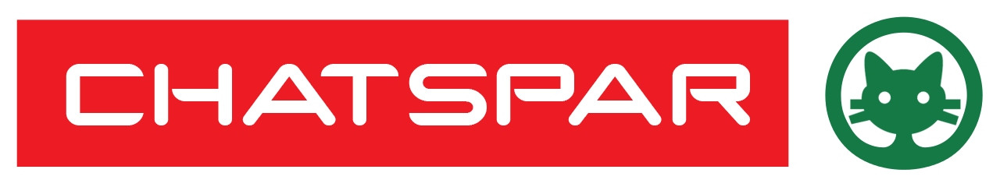

Your browser doesn't support the features required by impress.js, so you are presented with a simplified version of this presentation.
For the best experience please use the latest Chrome, Safari or Firefox browser.
#HackTheDatas
L'éthique de la donnée
29/05/2016 - la:matrice
Open Source
L'opensource permet de se passer du tiers de confiance, si chacun·ne peut consulter librement le code.
Chiffrement
Les paquets transmis sur le réseau doivent être signés et chiffrés de bout en bout. Cela afin de garantir la confidentialité et l'intégrité de l'information transmise.
Permissionless
C'est la possibilité donnée à l'utilisateur·e de collecter, recueillir, exploiter ses données sans demander la permission à un tiers.
P2P
L'échange de pair à pair des informations sans passer par un tiers, permet de se passer de la question du tiers de confiance. Les échanges sont recueillis sur un annuaire. Un exemple : la blockchain.
Etude de cas : Fraude
Mai 2015 : projet de loi relatif au dialogue social.
Possibilité donnée à Pôle Emploi d'avoir accès aux relevés banquaires, relevés téléphoniques et données de géolocalisation détenues par certaines entreprises privées.

Team ChatSpar
P. Allée, C. Bibard, J-C Bournot, K. Goarand, E. Nahuet, A. Pennors.
#HackTheDatas / 27 - 29 Mai 2016 / la:matrice